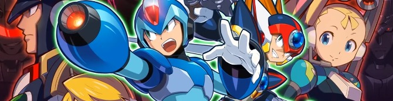

Series

About the Mega Man Series
The Mega Man X series consists of 8 main games and a few spinoffs. It was a follow-up to the Mega Man Classic series, and was followed by other sequel series. There are other spinoff series, but the series below are the ones that follow the same basic story continuity.
Mega Man Series:
- Mega Man Classic Series
- Mega Man X Series
- Mega Man Zero Series
- Mega Man ZX Series
- Mega Man Legends Series
Mega Man X Games
Mega Man X

Mega Man X2

Mega Man X3

Mega Man X4

Mega Man X5

Mega Man X6

Mega Man X7

Mega Man X8